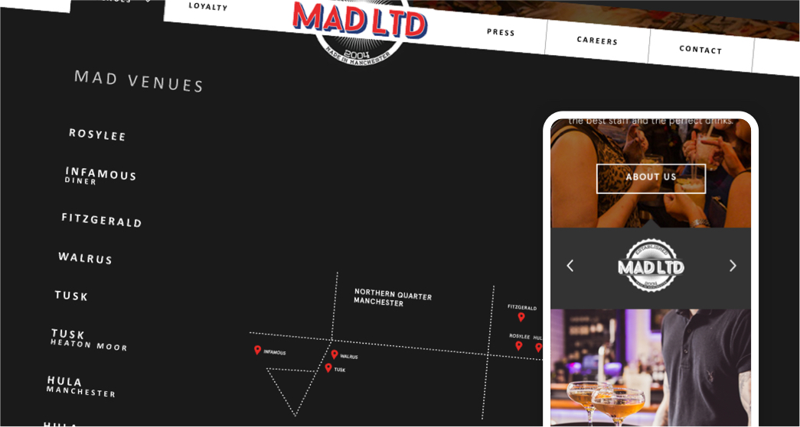
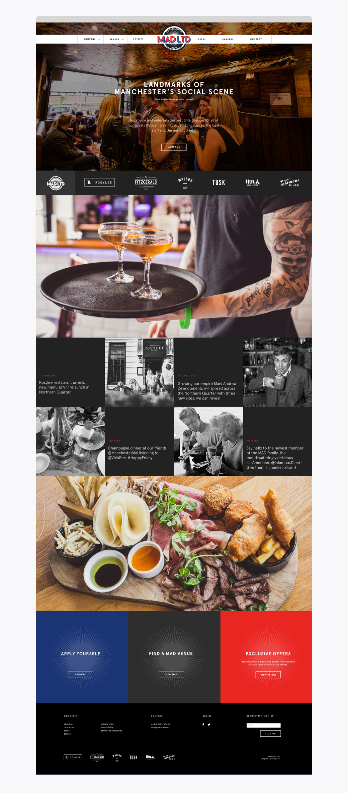
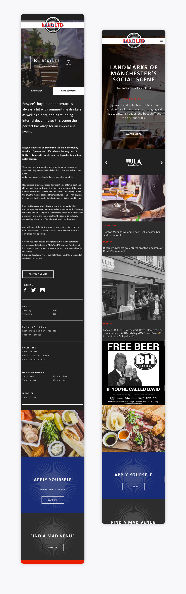
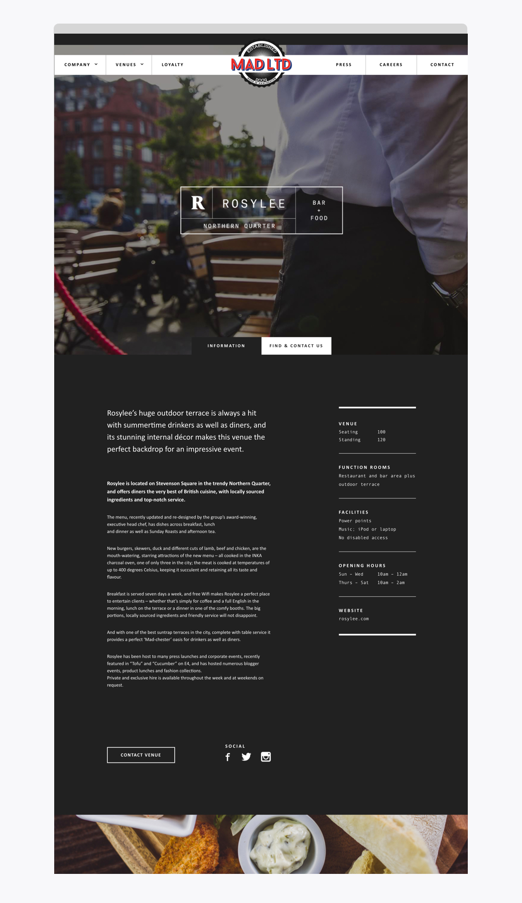

Mark Andrew Developments

The Problem
I was approached by Ahoy Agency (I had worked with Ahoy Agency often in the past) to deliver a website for one of their clients. The brief was to listen to the clients direction, and deliver something that would "wow them". They did not have a brand, so it was from scratch, and it needed to help show off their other restaurants.
There was also a need for the website to be a CMS, so we decided upon using WordPress.
The Solution
A visually appealing website with huge photography showcasing their amazing restaurants, which was easy to navigate and use. The client was delighted with the final result.
My Responsibilites
Website strategy, prototype, design, regular feedback sessions with client and account manager, design iterations, development (WordPress), email design and build.
Site Link
Mark Andrew Developments
(link on wayback machine)


